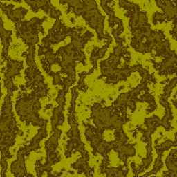

Si vous avez déjà essayé de générer un terrain, une texture de nuage ou de marbre, de simuler l'oscillation des herbes sous l'effet du vent, vous vous êtes vite rendu compte qu'il faut intégrer un facteur aléatoire à l'algorithme.
Prenons par exemple la génération d'un terrain, sous forme d'une heightmap (donc un tableau bidimensionnel stockant l'altitude de chaque point de la carte). L'idée « naïve » qui vient souvent est de faire une double boucle et de remplir le tableau avec une fonction aléatoire rand(). Comme on s'en rend vite compte, les résultats ne sont pas très glorieux, on obtient de la neige comme sur les vieux postes de télévision. Il va donc falloir creuser un peu plus afin d'avoir un effet à la fois aléatoire et cohérent.
Pour avoir un effet cohérent, il faut préserver une certaine régularité dans les valeurs générées. Par là, on entend qu'il ne faut pas avoir de trop grands écarts entre deux valeurs successives. Le problème, c'est que plus on augmente la cohérence, plus on diminue le côté « aléatoire »...
La plupart des langages actuels fournissent des outils facilitant la génération de nombres aléatoires, mais si on veut quelque chose de cohérent, il faudra les retravailler soi-même. Pour cela, on utilise plusieurs fois le même jeu de valeurs, en les combinant tout en accordant plus d'importance à celles qui sont les plus cohérentes.
Voici quelques exemples expliqués dans ce tutoriel :
En algorithmique, on utilise le terme de bruit pour parler d'un jeu de valeurs aléatoires erratiques. Voici un exemple de bruit (sur une seule dimension) :
Petits mots de vocabulaire : l'amplitude du bruit est l'écart entre la plus grande et la plus petite valeur du bruit. On parle aussi d'effectif total pour désigner le nombre de valeurs du bruit.
La première étape consiste donc à générer un bruit. Il y a plusieurs méthodes possibles, et pour rester général, nous allons donc créer une fonction double bruit(int i) qui renvoie la i-ème valeur de notre bruit. Pour générer ce bruit, il y a plusieurs méthodes :
on génère un tableau préalablement à partir d'une fonction rand(), comme il y en a dans tous les langages ;
on définit explicitement un jeu de valeurs dans le code source. C'est notamment nécessaire lorsqu'il est difficile de faire persister les données entre les différentes exécutions de l'algorithme (dans les shaders, par exemple) ;
on peut aussi écrire sa propre fonction pseudo-aléatoire.
Et si l'on voulait faire un bruit bidimensionnel ?
Dans ce cas, nous aurons besoin d'un bruit en deux dimension, c'est-à-dire d'un jeu de valeurs bivarié. On aurait donc une fonction similaire double bruit2D(int i, int j).
Maintenant on a notre bruit. Mais bon, ce n'est qu'un jeu de points discrets. L'étape suivante va être de construire une fonction assez régulière à partir de ça. À cette fonction, nous donnerons le nom de fonction de bruit.
Pour construire cette fonction, on associe à certaines de ses valeurs celles du bruit, et on tente de les relier entre eux. Pour associer les valeurs, on les dispose à intervalle régulier (on appelle la distance entre deux points le pas). En clair, notre fonction est telle que fonction_bruit(i * pas) == bruit(i) (pour tout entier positif i plus petit que notre effectif total, évidemment).
Reprenons notre image précédente, et voici un résultat qu'on pourrait obtenir, avec un pas unitaire.
Maintenant, il ne reste plus qu'à calculer les points entre nos valeurs. Pour cela, nous allons introduire la notion d'interpolation.
Ce procédé consiste à construire une fonction continue à partir d'un nombre fini de points. Il existe pas mal d'interpolations, mais nous n'en verrons ici que trois. Comme vous l'aurez compris, on cherche à relier les points entre eux. Pour cela, la stratégie habituelle consiste à utiliser une petite fonction différente pour chaque intervalle entre deux points (c'est le cas de toutes les interpolations utilisées ici, mais ce n'est pas une généralité — les interpolations polynomiales, par exemple, ne sont pas construites ainsi). Évidemment, toutes ces petites fonctions se ressembleront fortement, c'est-à-dire qu'elles seront de même nature, mais leurs coefficients varieront.
Interpolation linéaire
Cette interpolation est simplissime, elle relie simplement deux points par un segment.
La fonction suivante interpole les points a et b, avec x le facteur qui varie entre 0 et 1 (0 correspond évidemment à a et 1 à b).
double interpolation_lineaire(double a, double b, double x) {
return a * (1 - x) + b * x;
}
Le seul avantage que l'on puisse lui trouver est la rapidité d'exécution, mais le rendu final aura vite fait de nous en dégoûter.
Pour faire une interpolation linéaire en deux dimensions des points formant le carré abcd, il suffit d'interpoler a et b, et c et d sur x, puis les résultats obtenus sur y.
Le principe est le même que pour la première : on a un point a, un point b, et on relie les deux. Sauf que, au lieu de les relier linéairement, on va utiliser une courbe en forme de S. Jetons donc un œil à la fonction \frac{(1 - \cos(\pi x))}2.
Comme on le voit sur le graphe de la fonction, elle varie entre 0 et 1 lorsque x est entre 0 et 1. Ainsi, on peut considérer \frac{(1 - \cos(\pi x))}2 plutôt que x comme facteur d'interpolation.
L'interpolation cubique consiste à relier deux points en calculant une cubique les reliant.
Bon comme vous l'avez peut-être remarqué, il existe une infinité de cubiques passant par ces deux points, et elles ne donnent pas toutes des résultats très glorieux. Pour réduire le nombre de cubiques possibles, nous allons aussi regarder le point précédent ainsi que le suivant. Il y a d'autres critères concernant la continuité des dérivées premières et secondes, mais cela sort du cadre de ce tutoriel.
double interpolation_cubique(double y0, double y1, double y2, double y3, double x) {
a = y3 - y2 - y0 + y1;
b = y0 - y1 - a;
c = y2 - y0;
d = y1;
return a *x * x * x + b * x * x + c * x + d;
}
Eh bien, passons à la 2D, nous verrons... On va faire comme pour les autres alors. Alors le hic, c'est qu'on a 4 points, non plus 2. Alors on n'aura pas 3 interpolations de 2 points, mais bien 5 de 4 points.
Voilà qui est fini pour les interpolations. Il reste maintenant à construire notre fonction.
Pour les matheux en herbe :
Il est intéressant ici de remarquer le sens mathématique de ce que l'on appelait tantôt la « régularité » de la fonction. En fait, une fonction est plus régulière plus elle est continument dérivable un grand nombre de fois (donc plus le n tel qu'elle appartienne à C_n est grand). Notons que comme on n'a rien de plus méchant que des polynômes et des cosinus, et que ces fonctions sont infiniment continument dérivables, le seul problème qu'on pourrait avoir se situe aux « joints » entre les différentes fonctions.
Regardons la régularité des interpolations proposées :
interpolation linéaire \in C_0 ;
interpolation cosinusoïdale \in C_1 ;
interpolation cubique \in C_2.
Cela appuie donc notre intuition.
Notons que ce n'est plus nécessairement vrai en 2D...
Interpolons notre bruit
Nous avons maintenant une fonction qui nous permet de relier deux points successifs. L'étape suivante consiste donc à obtenir une fonction qui, pour une valeur donnée, trouve les deux points entre lesquels se situe la valeur, ainsi que la position entre les deux points (sous la forme d'une pourcentage, entre 0 et 1, où 0 est le point à gauche et 1 le point à droite) et les relies grâce à la fonction précédemment définie.
Comme les différents points sont espacés d'une distance pas, le point à gauche de notre valeur (appelons la x) à pour indice un entier i tel que i * pas <= x < (i+1) * pas (et donc i+1 est l'indice du point à droite).
On trouve donc l'indice du point à gauche en calculant le plus grand entier plus petit ou égal à x / pas (en utilisant floor(), ou en faisant un cast en entier).
La position entre les deux points se calcule en prenant distance entre la valeur et le point à gauche moins la distance entre les deux points, c'est-à-dire (x - i*pas) / pas. Cela dit, comme c'est équivalant à x / pas - i, et que i est la partie entière de x/pas (c'est comme ça qu'on a calculé i), on peut aussi prendre la partie décimale de x / pas (donc on fait modulo 1).
Évidement, dans le cas d'une interpolation cubique, il faut trouver plus de points, mais ce n'est guère différent. Voilà le code de la fonction :
// int pas = ...
// int effectif = ...
double fonction_bruit(double x) {
int i = (int) (x / pas);
return interpolation_cos(bruit(i), bruit(i + 1), (x / pas) % 1);
// On peut aussi choisir une des deux autres interpolations :
// return interpolation_lineaire(bruit(i), bruit(i + 1), (((double) x) / pas) % 1);
// return interpolation_cubique(bruit(max(0, i - 1)), bruit(i), bruit(i + 1), bruit(min(i + 2, effectif)), (x*f)%T);
}
Remarquez pour l'interpolation cubique, l'utilisation de min() et de max() pour éviter les erreurs de débordement si vous utilisez des tableaux.
Et en 2D, rien de bien étonnant :
// int pas = ...
double fonction_bruit2D(double x, double y) {
int i = (int) (x / pas);
int j = (int) (y / pas);
return interpolation_cos2D(bruit2D(i, j), bruit2D(i + 1, j), bruit2D(i, j + 1), bruit2D(i + 1, j + 1), (x / pas) % 1, (y / pas) % 1);
// Évidemment, on peut changer d'interpolation.
}
Dans l'introduction, j'ai parlé de réutiliser le même jeu de valeurs, que l'on peut maintenant appeler bruit. En fait, on utilise une seule fonction de bruit de base, et on fait varier ses paramètres (le pas et l'amplitude) pour obtenir d'autres fonctions de bruit.
Petit mot de vocabulaire : le nombre de bruits "élémentaires" utilisés est appelé nombre d'octaves. Notons-le n.
Nous allons donc faire varier le pas et l'amplitude de notre fonction de bruit. Plus le pas est petit, moins le bruit est cohérent. Il est nécessaire de diminuer l'amplitude du bruit au fur et à mesure que le pas diminue. Nous allons donc diviser le pas de notre fonction de bruit par deux, et multiplier son amplitude par un paramètre p compris entre 0 et 1, que nous appellerons persistance.
Pour obtenir une troisième fonction de bruit, il suffit de répéter l'opération sur la deuxième, et ainsi de suite jusqu'à obtenir n bruits.
Dernière petite chose, on remarque que diviser le pas par 2 revient à multiplier le paramètre x de la fonction par 2.
Dès lors, la formule de la i-ème fonction de bruit est :
Comme un petit schéma vaut mieux qu'une grande explication, regardons la tête de nos différents bruits consécutifs.
Pour information : nous prenons ici une persistance de 0,5 et notre pas fondamental est de 128 px. La taille du bruit est de 256 px. Nous générons le bruit sur 5 octaves. L'interpolation utilisée est la cubique.
Pas (px)
Amplitude (px)
Image
128
256
64
128
32
64
16
32
8
16
Et la somme du tout
Vous l'aurez compris à notre dernière image, le bruit final n'est rien de plus compliqué que la somme de ces bruits "élémentaires". Cela dit, cette fonction peut nous donner des valeurs plus grandes que 1. Afin de réduire mes valeurs à l'intervalle [0;1], il faut diviser le tout par l'amplitude maximum possible de la fonction, qui est égale à 1 + p + p^2 + \ldots + p^{n-1} = \frac{1 - p^n}{1 - p}.
Notons que si p = 1, il suffit de diviser par n (on ne peut décemment pas utiliser la formule précédente qui amène une division par 0).
Et quand on change la persistance ?
Voici maintenant un petit tableau montrant ce qui se passe lorsqu'on change la persistance. On conserve toujours un même pas et un même nombre d'octaves.
On a donc déjà une fonction fonction_bruit(double x).
double bruit_coherent(double x, double persistance, int nombre_octaves) {
double somme = 0;
double p = 1;
int f = 1;
for(int i = 0 ; i < nombre_octaves ; i++) {
somme += p * fonction_bruit(x * f);
p *= persistance;
f *= 2;
}
return somme * (1 - persistance) / (1 - p);
}
Et en 2D :
double bruit_coherent2D(double x, double y, double persistance, int nombre_octaves) {
double somme = 0;
double p = 1;
int f = 1;
for(int i = 0 ; i < nombre_octaves ; i++) {
somme += p * fonction_bruit2D(x * f, y * f);
p *= persistance;
f *= 2;
}
return somme * (1 - persistance) / (1 - p);
}
Pour les matheux en herbe :
L'expression mathématique du bruit est la suivante : P_n(x) = \sum_{i=0}^{n-1} p^i{\mbox{bruit}}(2^i.x). C'est une série (absolument) convergente, majorée par la série géométrique : \sum_{i=0}^{n-1} p^i = \frac{1 - p^n}{1 - p}.
Autre remarque intéressante, c'est que la fonction de bruit cohérent possède le même niveau de régularité que la fonction interpolée. Dès lors, certains bruits, où le temps fait office de paramètre, nécessiteront une interpolation cubique afin de préserver la continuité de l'accélération.
Voici le code complet (avec l'interpolation cosinusoïdale) en langage C.
void initBruit1D(int longueur, int pas, int octaves);
double bruit_coherent1D(double x, double persistance);
void destroyBruit1D();
void initBruit2D(int longueur, int hauteur, int pas, int octaves);
double bruit_coherent2D(double x, double y, double persistance);
void destroyBruit2D();
#include <stdlib.h>
#include <math.h>
#include <time.h>
const double pi = 3.14159265;
static int pas1D = 0;
static int nombre_octaves1D = 0;
static int taille = 0;
static double* valeurs1D;
static int pas2D = 0;
static int nombre_octaves2D = 0;
static int hauteur = 0;
static int longueur = 0;
static int longueur_max = 0;
static double* valeurs2D;
void initBruit1D(int t, int p, int n) {
nombre_octaves1D = n;
if(taille != 0)
free(valeurs1D);
taille = t;
pas1D = p;
valeurs1D = (double*) malloc(sizeof(double) * (int) ceil(taille * pow(2, nombre_octaves1D - 1) / pas1D));
srand(time(NULL));
int i;
for(i = 0; i < ceil(taille * pow(2, nombre_octaves1D - 1) / pas1D); i++)
valeurs1D[i] = (double) rand() / RAND_MAX;
}
void destroyBruit1D() {
if(taille != 0)
free(valeurs1D);
taille = 0;
}
static double bruit1D(int i) {
return valeurs1D[i];
}
static double interpolation_cos1D(double a, double b, double x) {
double k = (1 - cos(x * pi)) / 2;
return a * (1 - k) + b * k;
}
static double fonction_bruit1D(double x) {
int i = (int) (x / pas1D);
return interpolation_cos1D(bruit1D(i), bruit1D(i + 1), fmod(x / pas1D, 1));
}
double bruit_coherent1D(double x, double persistance) {
double somme = 0;
double p = 1;
int f = 1;
int i;
for(i = 0 ; i < nombre_octaves1D ; i++) {
somme += p * fonction_bruit1D(x * f);
p *= persistance;
f *= 2;
}
return somme * (1 - persistance) / (1 - p);
}
void initBruit2D(int l, int h, int p, int n) {
nombre_octaves2D = n;
if(taille != 0)
free(valeurs2D);
longueur = l;
hauteur = h;
pas2D = p;
longueur_max = (int) ceil(longueur * pow(2, nombre_octaves2D - 1) / pas2D);
int hauteur_max = (int) ceil(hauteur * pow(2, nombre_octaves2D - 1) / pas2D);
valeurs2D = (double*) malloc(sizeof(double) * longueur_max * hauteur_max);
srand(time(NULL));
int i;
for(i = 0; i < longueur_max * hauteur_max; i++)
valeurs2D[i] = ((double) rand()) / RAND_MAX;
}
void destroyBruit2D() {
if(longueur != 0)
free(valeurs2D);
longueur = 0;
}
static double bruit2D(int i, int j) {
return valeurs2D[i * longueur_max + j];
}
static double interpolation_cos2D(double a, double b, double c, double d, double x, double y) {
double y1 = interpolation_cos1D(a, b, x);
double y2 = interpolation_cos1D(c, d, x);
return interpolation_cos1D(y1, y2, y);
}
static double fonction_bruit2D(double x, double y) {
int i = (int) (x / pas2D);
int j = (int) (y / pas2D);
return interpolation_cos2D(bruit2D(i, j), bruit2D(i + 1, j), bruit2D(i, j + 1), bruit2D(i + 1, j + 1), fmod(x / pas2D, 1), fmod(y / pas2D, 1));
}
double bruit_coherent2D(double x, double y, double persistance) {
double somme = 0;
double p = 1;
int f = 1;
int i;
for(i = 0 ; i < nombre_octaves2D ; i++) {
somme += p * fonction_bruit2D(x * f, y * f);
p *= persistance;
f *= 2;
}
return somme * (1 - persistance) / (1 - p);
}
Niveau utilisation, rien de bien étrange. N'oubliez juste pas d'appeler les fonctions initBruit*D() et destroyBruit*D() avant et après utilisation.
Voilà, maintenant on sait faire un bruit cohérent. Et si l'on peut l'utiliser directement, on peut faire bien plus en en faisant une utilisation plus originale.
Je vais vous montrer ici quelques usages possibles. Certains sont des standards bien connus, d'autres sont inventés de toutes pièces. Je ne peux que vous conseiller d'essayer, vous aussi, toutes sortes de combinaisons afin de créer des textures réalistes.
Créer une image à partir d'un bruit cohérent
Je n'ai peut-être pas été très explicite là-dessus dans le début de ce tutoriel. Pour générer une texture procédurale, il faut calculer sa couleur à chaque pixel. Pour ce faire, il faut une fonction du genre int obtenirPixel(int x, int y). Après quoi il suffit de faire une double boucle sur les « x » et les « y », et puis de dessiner votre pixel avec votre bibliothèque préférée.
Comme c'est la bibliothèque présentée dans le cours officiel de ce site, je vais utiliser ici la SDL. Vous pouvez d'ailleurs aller jeter un coup d'œil du côté de ce tutoriel, qui parle de la modification procédurale d'images. Je ne m'attarderai moi-même pas sur l'utilisation de la SDL, cela dépassant le cadre de ce tutoriel.
Dès lors, voici le code que je vais utiliser dans toutes les fonctions suivantes :
#include <stdio.h>
#include <stdlib.h>
#include <SDL/SDL.h>
#include "noise.h"
// On définit la taille de l'image.
#define TAILLE 512
// On définit le nombre d'octaves.
#define OCTAVES 8
// On définit le pas.
#define PAS 128
// On définit la persistance.
#define PERSISTANCE 0.5
void definirPixel(SDL_Surface *surface, int x, int y, Uint32 pixel);
Uint32 obtenirCouleur(double rouge, double vert, double bleu);
Uint32 obtenirPixel(int x, int y);
int main(int argc, char *argv[]) {
SDL_Surface *ecran = NULL, *img = NULL;
SDL_Rect position;
// On initialise la SDL.
SDL_Init(SDL_INIT_VIDEO);
ecran = SDL_SetVideoMode(TAILLE, TAILLE, 32, SDL_ANYFORMAT | SDL_HWSURFACE );
SDL_WM_SetCaption("Test Bruit cohérent", NULL);
// On crée une surface SDL pour dessiner dedans.
img = SDL_CreateRGBSurface(SDL_HWSURFACE, TAILLE, TAILLE, 32, 0, 0, 0, 0);
initBruit2D(TAILLE + 1, TAILLE + 1, PAS, OCTAVES);
int x,y;
for(y = 0; y < TAILLE; y++)
for(x = 0; x < TAILLE; x++)
definirPixel(img, x, y, obtenirPixel(x, y));
destroyBruit2D();
/* ************ Affichage du résultat **************** */
position.x = position.y = 0;
SDL_BlitSurface(img, NULL, ecran, &position);
// On force l'affichage.
SDL_Flip(ecran);
// On attend que l'utilisateur quitte.
SDL_Event event;
do
SDL_WaitEvent( &event );
while ( event.type!= SDL_QUIT);
SDL_Quit();
return EXIT_SUCCESS;
}
void definirPixel(SDL_Surface *surface, int x, int y, Uint32 pixel) {
int opp = surface->format->BytesPerPixel;
Uint8 *p = (Uint8 *)surface->pixels + y * surface->pitch + x * opp;
switch(opp) {
case 1:
*p = pixel;
break;
case 2:
*(Uint16 *) p = pixel;
break;
case 3:
if(SDL_BYTEORDER == SDL_BIG_ENDIAN)
{
p[0] = (pixel >> 16) & 0xff;
p[1] = (pixel >> 8) & 0xff;
p[2] = pixel & 0xff;
}
else
{
p[0] = pixel & 0xff;
p[1] = (pixel >> 8) & 0xff;
p[2] = (pixel >> 16) & 0xff;
}
break;
case 4:
* (Uint32 *) p = pixel;
break;
}
}
Uint32 obtenirCouleur(double rouge, double vert, double bleu) {
return (((int) (rouge * 255)) << 16) + (((int) (vert * 255)) << 8) + (int) (bleu * 255);
}
Notons que j'utilise ici le format Uint32. C'est un format déclaré dans SDL.h, et donc spécifique à la SDL, comme au langage C. Dans la suite, comme j'essaie de rester plus général, j'utiliserai la fonction int obtenirPixel(int x, int y), en utilisant un simple int, n'oubliez donc pas de changer en conséquence.
Maintenant on va pouvoir s'intéresser à notre fonction int obtenirPixel(int x, int y). Déjà cette fonction retourne un entier, alors encore faut-il pouvoir obtenir un entier à partir d'une couleur.
Bon, je suppose qu'à ce niveau vous savez qu'une couleur peut être décrite par ses composantes rouge, verte et bleue. Généralement, on stocke tout cela sur un seul entier de 24 bits de profondeur (32 si l'on a un canal alpha). Pour ce faire, j'ai déclaré la fonction int obtenirCouleur(double rouge, double vert, double bleu).
Génération de Heightmap
Attention, ceci n'est qu'une mise en bouche.
int obtenirPixel(int x, int y) {
double valeur = bruit_coherent2D(x, y, PERSISTANCE);
return obtenirCouleur(valeur, valeur, valeur);
}
Rien de bien compliqué quoi. Je ne vous ajoute pas un screenshot étant donné que vous en avez pas moins de 17 plus haut.
Bruit avec seuils
Pour ce bruit, on utilise des seuils qui définissent des intervalles auxquels on associe une couleur. Bon, ce sera sans doute plus clair avec un exemple. Je vais ici montrer un bruit avec 3 seuils. Soient des seuils s1, s2 et s3. Et des couleurs c1, c2 et c3.
On regarde entre quels seuils se situe la valeur de notre bruit (appelons-la v) et on fait une interpolation linéaire entre les deux couleurs correspondantes aux seuils. Si v < s1, on renvoie c1, et si v > s3, on renvoie c3.
Bon pour la cause, définissons une petite structure pour notre couleur.
Vous me direz sûrement que ce n'est pas très réaliste, mais les seuils pourront vous permettre de faire plein de choses, et avec autant de seuils que vous voudrez. Par exemple, on pourrait définir des seuils d'altitude avec du bleu sous le niveau de la mer, puis du jaune (sable), puis du vert (herbe) et puis du blanc (neige), et ainsi dessiner une carte. Évidemment, c'est un peu simpliste, une carte doit tenir compte d'autres éléments comme la végétation ou l'inclinaison du sol, mais ce n'est pas le sujet ici.
Texture de bois
On utilise ici deux couleurs (brun clair et brun foncé).
Le bois possède des veines de formes plus ou moins circulaires. Or, le bruit fait des genres de « taches » circulaires. On peut donc reprendre la méthode des seuils, en employant alternativement la couleur claire puis la foncée, avec un assez grand nombre de seuils.
Dans la pratique, au lieu d'utiliser un grand nombre de seuils, on va employer une petite astuce : imaginons qu'on ait 10 seuils alternant deux couleurs et disposés régulièrement, cela revient à mettre un premier seuil clair à 0, un second foncé à 0.1, un troisième clair à 0.2, et de faire un modulo 0.2 sur la valeur.
De plus, si l'on a une valeur v entre 0.1 et 0.2, la couleur interpolée sera la même que celle de 0.2 - v.
Dernière chose, j'utilise une interpolation cosinusoïdale entre les deux couleurs, au lieu d'une linéaire (c'est plus joli).
On peut faire varier les paramètres habituels et les couleurs afin d'obtenir différents types de bois (liège, chêne...). Diminuer le seuil, augmentera le nombre de lignes. Et deux-trois images pour la route :
Texture de marbre, méthode « à lignes »
On utilise les deux couleurs gris moyen-clair et gris très clair-blanc.
Cette méthode utilise une approche un peu différente de celle des seuils. Elle va, d'une part, utiliser un cosinus afin de générer un effet de lignes parallèles, et d'autre part introduire dans cette fonction un bruit afin de perturber les lignes.
Nous allons prendre des lignes verticales. Comme on interpole toujours deux couleurs, on a besoin d'un facteur entre 0 et 1. Vous vous rappelez l'interpolation cosinusoïdale, on aura un truc du genre (1 - cos(?))/2.
Pour avoir nos lignes verticales, on aura donc un code dans ce genre.
int lignes = 30;
valeur = (1 - cos(lignes * 2 * PI * x / TAILLE) / 2;
Il reste à ajouter notre perturbation. Le code devrait ressembler à ceci.
La perturbation est un pourcentage. Tant qu'elle est plus petite que 1, deux lignes ne s'intersecteront jamais.
Les images :
Texture de marbre, méthode du sin
On utilise les deux couleurs gris moyen-clair et gris très clair-blanc. Voilà ma propre méthode. On veut toujours faire une interpolation entre les deux couleurs. On va donc faire une interpolation.
On cherche donc à trouver un facteur d'interpolation qui varie entre 0 et 1. Dans une interpolation linéaire, ce facteur est le résultat du bruit, dans une cosinusoïdale, il s'agit de : (1 - cos(bruit_coherent2D(x, y, PERSISTANCE)))/2.
Pour les matheux en herbe :
On peut considérer un facteur comme une fonction f:[0;1] ightarrow [0;1] telle que :
f(0) = 0 ;
f(1) = 1.
Lorsqu'on cherche une interpolation plus ou moins cohérente, on attend souvent de cette fonction qu'elle soit bijective, et qu'elle ait un centre de symétrie en (0.5; 0.5), c'est-à-dire que pour tout x \in [0;1], on a f(x) = 1 - f(1 - x). Dès lors, on pourrait qualifier la répartition des valeurs d'homogène.
Le but recherché ici est contraire. On aimerait avoir une bien plus grande répartition de la couleur blanche par rapport à la couleur noire. D'où la recherche d'un facteur d'interpolation exotique.
Pour les autres : En général, on veut que le facteur d'interpolation se comporte sans préférence pour l'une ou l'autre valeur interpolée. Ainsi, les deux valeurs sont réparties équitablement. Ici, j'ai décidé de faire l'inverse. Comme cela, on aura une grande répartition de blanc, et une plus fine de noir, ce qui donne le caractère zébré du marbre.
Après pas mal de digressions en tout genre, j'en ai trouvé un assez plaisant : 1 - abs(sin(bruit_coherent2D(x, y, PERSISTANCE))). Pour accentuer encore plus la finesse des veines, on peut aussi utiliser une racine carrée sur la valeur absolue.
Voilà maintenant, amusez-vous à essayer toutes sortes d'interpolations diverses et variées, faites varier les couleurs et les paramètres du bruit et essayez d'obtenir vos propres méthodes pour dessiner des textures réalistes.
Vous pouvez aussi combiner les méthodes. Par exemple, en utilisant la méthode « à lignes » avec celle du bois, on obtient une texture de liège ou autre bois très léger.

(Et pourquoi pas, si vous obtenez un résultat original, postez-le dans les commentaires.)
Voilà, la génération de bruits cohérents n'a maintenant plus de secrets pour vous (ou pas :p). Avant que nous nous quittions, je vous laisse avec une petite application qui vous permettra de tester les différentes associations : (application jnlp, nécessite Java).
(désolé si je n'ai pas pris la peine de rectifier le nom).
La source de cette application (en Java) est disponible ici. Ce code source, ainsi que tous les codes précédents, sont placés sous la même licence que le tutoriel.
Crédits, références et liens utiles
Certains articles parlent de bruit de Perlin, ce qui est inexact (comme dit plus haut), mais cela n'en demeure pas moins de très bon articles.
Page de Ken Perlin, vous trouverez quelques liens si vous voulez aller plus loin avec la génération procéduralePage de Ken Perlin, vous trouverez quelques liens si vous voulez aller plus loin avec la génération procédurale


 Perlin noise
Perlin noise Génération de terrain par l'algorithme de Perlin
Génération de terrain par l'algorithme de Perlin